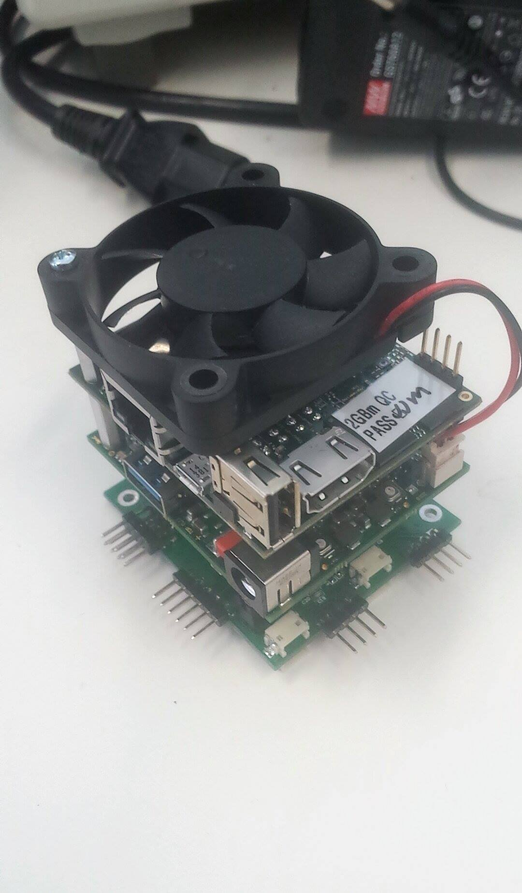
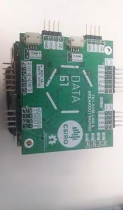
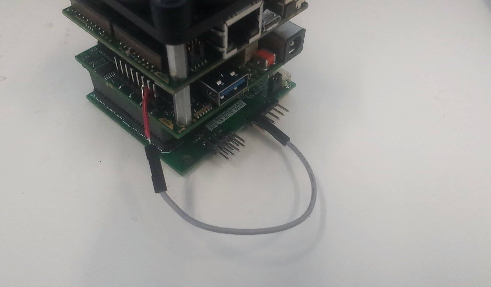

Using CAN on L4T through an MCP251X
 
Before running L4TCAN: Jumper HW-based chipselect to the GPIO chipselect
Because L4T with CAN doesn’t use GPIO chipselect (yet), it’s necessary to connect the hardware CSN line to the GPIO used for chipselect.
Note that the GPIO dts sets the GPIO used for chipselect to high impedance so bad things don’t happen.
CSN is indicated on the SPI expansion header. Can node #1 on the CAN daughterboard uses TK1_GPIO2, so it’s necessary to connect these 2 pins:

(From right-to-left on the TK1 GPIO header we have GPIO0, GPIO1, GPIO2)
NOTE: On the seL4 side, this may not be necessary as it will be able to use GPIO-based chipselects.
NOTE2: Justification for GPIO chipselects is that we have 2 CAN nodes and only 1 HW chipselect, so had to do it this way.
Option 1. Use our Linux image
Grab the image at tk1_can.img.gz (md5). Make sure to verify against the md5sum in the same folder once you’ve got it.
Set up the TK1 as usual - connect the UART as well as the recovery USB port next to the ethernet jack. Stop u-boot from booting and issue the command:
ums 0 mmc 0
This will allow you to see the TK1’s filesystem on your host pc. On your host PC, list your devices:
$ lsblk
You should see a 14.7GB-ish device with a few partitions - this is the TK1. (Make sure it is by mounting the largest partition and looking at the rootfs [making sure to unmount again before next step!])
We’re ready to image the TK1. Issue the following command, making ABSOLUTELY sure that your of=/dev/sdX line is correct so you don’t accidentally destroy data on your machine. Also, you want /dev/sdX (the device), NOT /dev/sdX3 (partitions) etc.
gunzip -c tk1_can.img.gz | sudo dd of=/dev/<your TK1 device> conv=sync bs=4K status=progress
This takes ~1.5Hr on my machine to complete. If dd throws a strange error to do with the ‘status=progress’ command, you may be using an old version of dd, it’s fine to omit this command however you will not see a progress bar.
Once this is complete, exit the ums command in u-boot and attempt to boot. As long as the can board CS is jumpered to GPIO2, everything should work.
You may see some lines after boot like:
rt5639 0-001c: Failed to set private addr: -121
This is normal, and everything should work regardless (internet connectivity works fine on our system). We’ll be looking into the reason for these errors in the future.
See bottom of this page for ‘hello-world’-type examples.
Option 2: compile your own Linux
The instructions from here on go from a vanilla TK1-SOM L4T configuration to one which can support CAN using the daughterboard.
Getting native Linux CAN drivers to work on the TK1-SOM requires a bit of hackery, procedure outlined here.
Before going ahead with this, follow the TK1-SOM custom kernel procedure, make sure you can build it and flash to the board
Add device tree support for MCP251X to L4T & perform driver hacks
The kernel that is included in L4T does not support device tree binding for the mcp251X, so you have to modify the kernel driver.
Easiest way to do that is to just use mine: (Works with latest L4T from colorado. Don’t use the upstream NVIDIA L4T)
Get it here: mcp251x.c
You want to replace the file in drivers/net/can/mcp251x.c
NOTE: this is NOT the same as the file in mainline kernel, it has a hack that fixes a problem I had with the device tree not recognising clock nodes.
This means that this file will only work with an MCP251X that has a 20MHz crystal!
I’ve also added a lot of debugging information to the driver so that dmesg is a bit more helpful.
Look at device tree documentation
Device tree documentation does not exist in the source code as mcp support has been hacked in. Here’s the docs from mainline:
.
- Microchip MCP251X stand-alone CAN controller device tree bindings
Required properties:
- compatible: Should be one of the following:
- "microchip,mcp2510" for MCP2510.
- "microchip,mcp2515" for MCP2515.
- reg: SPI chip select.
- clocks: The clock feeding the CAN controller.
- interrupt-parent: The parent interrupt controller.
- interrupts: Should contain IRQ line for the CAN controller.
Optional properties:
- vdd-supply: Regulator that powers the CAN controller.
- xceiver-supply: Regulator that powers the CAN transceiver.
Example:
can0: <can@1> {
compatible = "microchip,mcp2515";
reg = <1>;
clocks = <&clk24m>;
interrupt-parent = <&gpio4>;
interrupts = <13 0x2>;
vdd-supply = <®5v0>;
xceiver-supply = <®5v0>;
};
Modify the device tree
Replace the existing .dts files with tegra124-tk1-som-pm375-000-c00-00.dts
You also need to remap some GPIOs, swap out the GPIO device tree with tegra124-tk1-som-gpio-default.dtsi
Kernel Build Configuration
Using make menuconfig, enable CAN and MCP251X modules. Make sure your .config contains:
CONFIG_CAN=m
CONFIG_CAN_RAW=m
CONFIG_CAN_BCM=m
CONFIG_CAN_GW=m
CONFIG_CAN_VCAN=m
CONFIG_CAN_DEV=m
CONFIG_CAN_CALC_BITTIMING=y
CONFIG_CAN_MCP251X=m
In addition to the ‘normal’ tk1-som kernel build settings given by Colorado in their readme.
It is up to you whether you would like to leave user-mode SPI drivers in there or not, they simply won’t load as the CAN dts removes the user-space SPI device.
Once we figure out how to do GPIO-muxed chipselect on the TK1SOM (working on it) it will be possible to use more than one CAN node & user-space SPI at the same time.
Enable hardware-based chipselect #0
There is a strange old touch-driver hanging around that needs to be disabled for you to be able to use hardware CS on the TK1-SOM’s SPI line.
Originally I pulled it out of the TK1-SOM’s SPI driver, but it turns out you can disable it in extlinux.conf, which is much simpler.
in /boot/extlinux/extlinux.conf on your rootfs, find the touch_id=0@0 line, and change it to touch_id=3@3
Load everything onto the board
You could do something like this:
update_kernel.sh
#!/bin/bash
L4T_DIR=/home/seb/TK1_SOM_2GB_Flashing/Linux_for_Tegra
SOM_DIR=/mnt/TK1SOM
sudo cp $L4T_DIR/sources/kernel/arch/arm/boot/zImage
$SOM_DIR/boot/zImage sudo cp
$L4T_DIR/sources/kernel/arch/arm/boot/dts/tegra124-tk1-som-pm375-000-c00-00.dtb
$SOM_DIR/boot/tegra124-tk1-som-pm375-000-c00-00.dtb
rebuild.sh - assumes u-boot running umc 0 mmc 0 at <tk1>
make
make modules
mount /dev/<tk1> /mnt/TK1SOM
./update_kernel.sh
make modules_install INSTALL_MOD_PATH=/mnt/TK1SOM
umount /dev/sdb1
Hello, world
When you boot up Linux login as: ubuntu password ubuntu.
Then:
dmesg | grep mcp # See if the driver loaded properly
[ 618.718288] mcp251x spi0.0: entered mcp251x_can_probe
[ 618.718296] mcp251x spi0.0: v2
[ 618.718332] mcp251x spi0.0: got clock
[ 618.718336] mcp251x spi0.0: finished clock configuration, freq: 20000000
[ 618.718353] mcp251x spi0.0: allocated CAN device
[ 618.718358] mcp251x spi0.0: clock prepared for enable
[ 618.729737] mcp251x spi0.0: configured can netdev
[ 618.729741] mcp251x spi0.0: power & transceiver regulator pointers OK
[ 618.729745] mcp251x spi0.0: enabled power
[ 618.729749] mcp251x spi0.0: about to enable DMA (if required)
[ 618.729754] mcp251x spi0.0: finished allocating DMA & non-DMA buffers
[ 618.729757] mcp251x spi0.0: netdev set
[ 618.729799] mcp251x spi0.0: configured SPI bus
[ 618.740194] mcp251x spi0.0: CANSTAT 0x80 CANCTRL 0x07
[ 618.740198] mcp251x spi0.0: successful hardware probe
[ 618.740795] mcp251x spi0.0: probed
[ 628.973815] mcp251x spi0.0: CNF: 0x00 0xbf 0x02
ls /sys/class/net # See if the can device is available and what it's called
can0 dummy0 eth0 ip6tnl0 lo rmnetctl sit0
sudo ip link set can0 up type can bitrate 500000 # Bring it up
ifconfig # Take a look...
can0 Link encap:UNSPEC HWaddr 00-00-00-00-00-00-00-00-00-00-00-00-00-00-00-00
UP RUNNING NOARP MTU:16 Metric:1
RX packets:0 errors:0 dropped:0 overruns:0 frame:0
TX packets:0 errors:0 dropped:0 overruns:0 carrier:0
collisions:0 txqueuelen:10{
RX bytes:0 (0.0 B) TX bytes:0 (0.0 B)
eth0 Link encap:Ethernet HWaddr 00:50:c2:72:00:59
inet addr:10.13.1.223 Bcast:10.13.1.255 Mask:255.255.254.0
inet6 addr: 2402:1800:4000:1:250:c2ff:fe72:59/64 Scope:Global
inet6 addr: fe80::250:c2ff:fe72:59/64 Scope:Link
------------------------------------------------------------------------
sudo apt-get install can-utils # (make sure to enable universe repository & update)
cansend can0 5A1#11.22.33.44.55.66.77.88 # Send a packet
candump can0 # Dump packets
Loopback mode test
ip link set can0 type can bitrate 500000 loopback on
ifconfig can0 up
candump any,0:0,#FFFFFFFF #In terminal 1
cansend can0 123#dead #In terminal 2